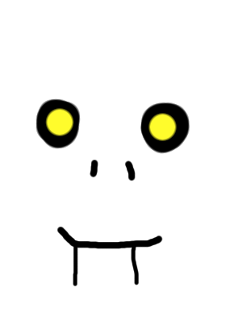

Scary SkelloFriends is a show just in our canon, and it is about the skellofriends goofing off or scaring people
Character 1:Scary
Character 2:Skello
Character 3:Friend
Favourite Foods:Scary=Pasta, Skello=Pizza and Friend=Pot Of Noodles
Most Loved Dance:The Boneless
Most disliked food:All Hate Bananas
Note- More will come when you see the show more.